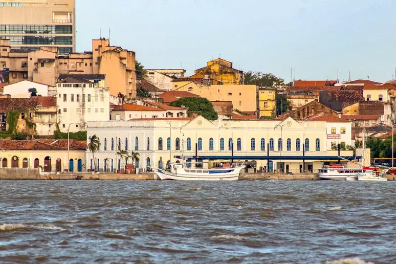

Maranhão, estado no nordeste brasileiro, é formado em parte pela Floresta Amazônica e pelas praias ao longo do Oceano Atlântico. Próximo à cidade de Barreirinhas, grandes dunas de areia branca criam paisagens que lembram um deserto no Parque Nacional Lençóis Maranhenses, onde lagoas de água fresca nas quais se pode nadar se formam durante a temporada de chuvas. É na capital, São Luís, que se encontra o agitado bairro histórico conhecido como Reviver.
 VOLTAR